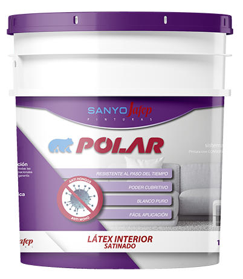

Polar Interior Satinado
Látex Interior Satinado Blanco
Látex Interior Satinado Blanco
DESCRIPCIÓN
Pintura de terminación satinada para interiores. Muy buen poder de nivelación, brillo parejo y lavabilidad. Es un producto altamente transpirable y lavable. Se aplica en interiores sobre cualquier superficie porosa. Yeso, revoque fino, enduido, cuanto más lisa sea la terminación, mejor se verá el acabado sedoso y parejo.
BENEFICIOS
Excelente blancura. Máxima lavabilidad y resistencia al roce. Gran adherencia. Permeable al vapor. Antihongo.
PRESENTACIÓN 1, 4, 10 y 20 litros.
USOS
Para ser aplicado en interior sobre revoque cementicio, mampostería, hormigón, yeso, ladrillo y placas de yeso. Excelente blancura poder cubritivo.
RENDIMIENTO
- De 10 a 12 m2 , Cuadrados por mano de litro.
$55.000